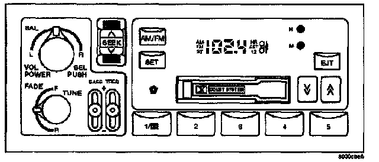
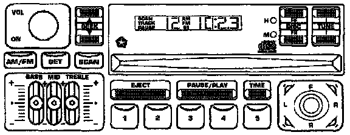
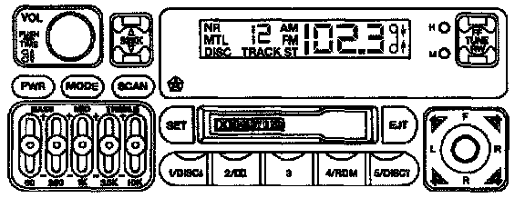
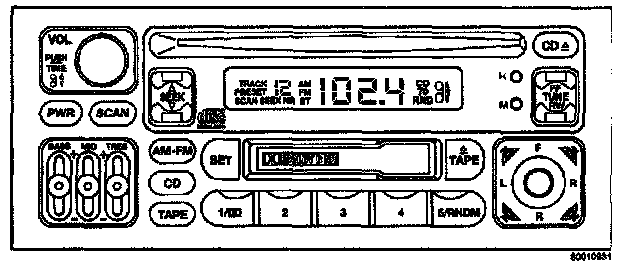

Radio Systems Description
RADIO SYSTEMSThere are 4 radio systems available in the Grand Cherokee. The sales codes for the radios are:
RAS - AM/FM cassette, two band E.Q., no external amplifier:

RAS - AM/FM cassette, two band E.Q., no external amplifier, no CCD diagnostics.
RBR - AM/FM CD, 3 band E.Q., external amplifier:

RBR - AM/FM CD, 3 band E.Q., external amplifier, CCD diagnostics.
RBN - AM/FM cassette, 5 band E.Q., external amplifier:

RBN - AM/FM cassette, 5 band E.Q., external amplifier, equipped to handle external CD changer, CCD diagnostics.
RAZ - AM/FM cassette and CD player, 3 band E.Q., external amplifier:

RAZ - AM/FM cassette and CD player, 3 band E.Q., external amplifier, CCD diagnostics.
The last three radios in the list are capable of displaying faults and allowing certain actuation tests through the use of the DRB. When attempting to perform CCD diagnostics, the first step is to identify the radio in the vehicle. Use the above list and the radio face plate drawings.